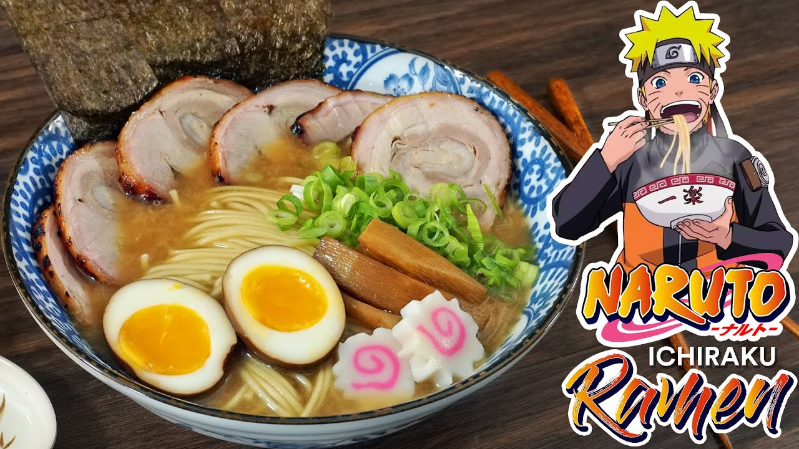

Make delicious ramen by following these steps

Ramen is a Japanese noodle soup. It consists of Chinese-style wheat noodles served in a meat or
fish-based broth, often flavored with soy sauce or miso, and uses toppings such as sliced pork,
nori, menma, and scallions.
Ingredients
- 1-2lbs pork cutlet/belly, chicken thigh or stew beef
- 3.5 tbsp of ginger
- 1/2 onion
- 3.5 tbsp garlic
- 2 cups Soy Sauce and ½ cup Water
- Cooking Sauce and 1/2 cup Lee Kum Kee Chicken Marinade
- 1 tsp of vegetable oil
- 1 green onion
- 1 cup chicken broth/stock
- 2 cloves of garlic, peeled
- 1/2 inch of ginger
- Salt and pepper
- Add desired vegetables. I prefer cauliflower, kale, carrots and spinach
- 2 instant Ramen noodles
- 2 boiled eggs
Directions
Step 1
Cook the meat.
Step 2
Cook the soup
Step 3
Boil the eggs
Step 4
Make the ramen
Step 5
Take the bowl of ramen and eat it!!!
Return to main page